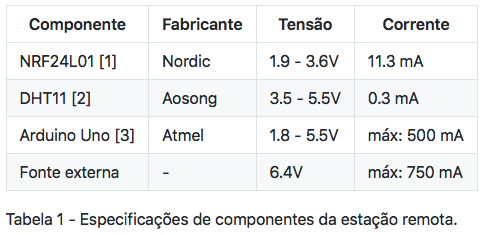
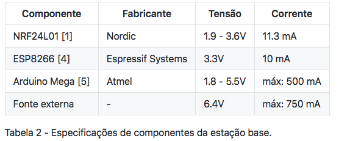

1. Tensão e corrente de operação
1.1 Módulo de coleta de dados (Estação remota)
Esta partição do projeto será composta pelos seguintes componentes: Arduino uno, módulo de transmissão rádio/wifi modelo NRF24L01 e sensor de temperatura e umidade relativa do ar modelo DHT11. O sensor DHT11 irá realizar a coleta de dados e por intermédio do microprocessador Arduino Uno, o módulo de rádio/wifi fará uma comunicação com a estação base onde também haverá um NRF24L01, e desta forma enviará os dados.
A tabela 1 demonstra os valores recomendados pelo fabricante para o bom funcionamento dos dispositivos. Vale lembrar que o projeto será dependente de uma rede elétrica próxima às estações (remota e base) para a alimentação dos componentes, para isto, é necessário uma fonte externa que fará a alimentação correta do microcontrolador. Essa fonte deverá ser capaz de fornecer entre 5 - 12V e 0.5 - 1A para o funcionamento eficaz do componente. Uma outra observação é em relação a tensão da rede local, cabe ao usuário verificar se a fonte externa é compatível com a mesma, caso contrário será necessário o uso de transformador para a conversão de tensão adequada. A fonte externa utilizada no desenvolvimento do projeto também está especificada na tabela 1.
1.2 Módulo de recepção de dados (Estação base)
A estação de recepção dos dados coletados (estação base) terá em sua composição os seguintes componentes: Arduino Mega, módulo de recepção rádio/wifi NRF24L01 e módulo wifi ESP8266. Nesta etapa, o módulo NRF24L01 receberá informações da estação remota e através do Arduino Mega serão processadas e organizadas, com isso, o módulo wifi terá a função de acessar esses dados já armazenados e enviá-los à nuvem onde ocorrerá todo o processo de manipulação e análise do conteúdo captado. Nesta etapa também será necessária uma rede elétrica local para a alimentação dos componentes. O usuário deve tomar as devidas precauções como já discutidas na seção 1.1. A tabela 2 demonstra as especificações dos componentes utilizados nesta parte do projeto.
2. Frequências de operacão dos módulos NRF24L01 e ESP8266
A comunicação entre os módulos NRF24L01 das diferentes estações ocorrerá na faixa de frequência de 2.4Ghz e de acordo com o datasheet [1] é possível alcançar uma taxa de transmissão de 2Mbps. Na etapa seguinte, o módulo ESP8266 enviará dos à rede wifi também na faixa de frequência 2.4Ghz [4], porém com taxa de transmissão próximo a 72Mbps.
3. Referências
[1] https://4donline.ihs.com/images/VipMasterIC/IC/NRSA/NRSAS00020/NRSAS00020-1.pdf?hkey=52A5661711E402568146F3353EA87419 [2] https://img.filipeflop.com/files/download/Datasheet_DHT11.pdf [3] https://pdf1.alldatasheet.com/datasheet-pdf/view/241077/ATMEL/ATMEGA328P.html [4] https://cdn-shop.adafruit.com/datasheets/ESP8266_Specifications_English.pdf [5] http://ww1.microchip.com/downloads/en/DeviceDoc/Atmel-2549-8-bit-AVR-Microcontroller-ATmega640-1280-1281-2560-2561_datasheet.pdf
[1] Datasheet NRF24L01 [2] Datasheet DHT11 [3] Datasheet Arduino Uno [4] Datasheet ESP8266 [5] Datasheet Arduino Mega